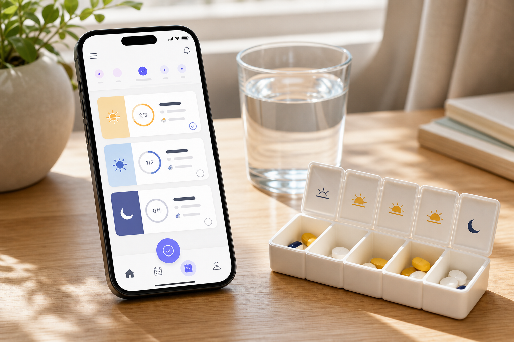

복약을 잊지 않도록, 부담은 덜어내도록
나와 가족의 약 먹는 시간을 조용히 챙겨요.
시간 알림, 복용 체크, 남은 약 관리, 보호자 공유까지 한 화면에서 자연스럽게 이어지는 복약 파트너입니다.

다음 복약
점심 식후 30분
50%
2개 중 1개 완료
체크하면 보호자에게 안심 메시지가 공유됩니다.
새 루틴
약 등록
아직 읽은 내용이 없어요. 첫 OCR은 준비에 10~30초 걸릴 수 있어요.
이번 주 기록
복약 흐름
오전 루틴은 안정적이고, 저녁 루틴은 평균 18분 늦어지고 있어요.
가족 안심 공유
보호자 연결
김
김민서 보호자